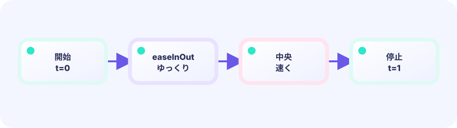

潰す
跳ぶ前に幅を増やし、高さを減らします。
Scale(1+s, 1-s)
★★☆☆☆ / PLAYABLE
新しいコマを描かなくても、跳ぶ前に横へ潰し、飛ぶ瞬間に縦へ伸ばすだけで、海老・天次郎の体が柔らかく見えます。大事なのは中心ではなく足元を動かさないことです。
このコースも LEVEL 01 の Update（数字）→ Draw（絵） のくり返しの上にあります。ここでは Draw の“描き方”を一段深く扱います。

PLAYABLE / LIVE GO + マウス
潰れ・通常・伸びを切り替え、足元が同じ場所に残ることを見比べます。
DEEP DIVE / OPTICAL TRICK / SQUASH
幅を増やしたぶん高さを減らすと、体積を保ったように見えます。足元を軸にすれば地面へめり込まず、潰れ→伸び→戻る順番だけで予備動作と反動が伝わります。
跳ぶ前に幅を増やし、高さを減らします。
Scale(1+s, 1-s)
動き出す瞬間は反対へ細長く。
s = -s
中心ではなく足を軸に変形します。
Translate(-w/2, -h)
TRY IT / SHAPE
潰れ・通常・伸びを切り替え、足元が同じ場所に残ることを見比べます。
IN THE WASM
横と縦を逆方向へ変え、最後に足元の座標へ戻します。
s := math.Sin(phase) * amount
op.GeoM.Translate(-w/2, -h) // 足元を原点へ
op.GeoM.Scale(base*(1+s), base*(1-s))
op.GeoM.Translate(feetX, feetY)
screen.DrawImage(sprite, op)WHY IT WORKS
急な伸びは速さ、潰れは重さに見えます。
WHY ANCHOR
接地点が固定されると、柔らかくても地面は固く見えます。
TRY NEXT
壁へ当たる方向だけ潰して、反射へ弾みを足そう。
FEEDBACK